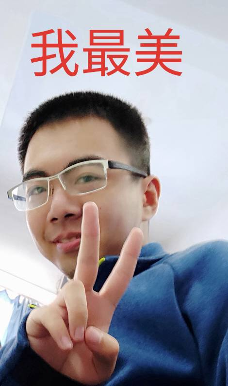

山东大学（威海）2018级数学与统计学院统计学01班，爱好计算机、先秦诸子学说与西方政治研究。在“妈祖情共振，丝路心相连”调研团中任队长一职，负责组织协调与联系单位。
山东大学（威海）2018级翻译学院 英语01班，负责分发问卷，制作PPT，文件排版
山东大学（威海）2017级文化传播学院 汉语言文学01班，负责通讯写作
个人就现任2017级新闻一班宣传委员 文化传播学院学生传媒中心部长 曾任校社团中心干事 有三年学生媒体从业经历 曾于《福建日报》《消费日报》实习 现在台北世新大学交流。 全国英语竞赛二等奖 第十三届本科生科研训练计划项目院级三等奖 校社团中心“优秀干事” 12·9海报大赛校级三等奖 第十四届模拟联合国大赛“最佳记者”、团体一等奖 校级社会实践优秀立项项目
山东大学（威海）文化传播学院2018级汉语国际教育专业。参加2019年全国大学生英语竞赛获二等奖。负载问卷设计，分发问卷，报告撰写
山东大学（威海）机电与信息工程学院软件工程二班学生。在此次社会实践分发社会调查，描述建模过程。
山东大学（威海）数学与统计学院2018级统计学数据科学实验班。正在脱宅的otaku。负责数据可视化及网站制作。
山东大学（威海）文化传播学院2017级汉语言文学专业学生擅长通讯写作，积极学习，乐观向上，爱好阅读，乐于参加各项活动。负责通讯写作。
山东大学（威海）2018级数学与统计学院原统计02班班长，现数据科学实验班文体委员。负责数学建模。
山东大学（威海）法学院法学专业01班。喜欢阅读运动等。曾获山魂海韵校史大赛院级三等奖[表情]负责走访机构，整理访谈记录。
Copyright © 2019. All rights reserved.